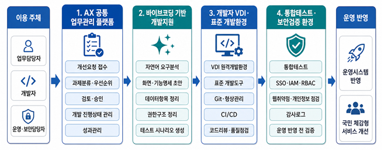

03. AX 공통기반 플랫폼
고용노동 AX 공통기반 플랫폼 구축
현황: 고용노동부-산하기관이 함께 쓰는 IT 인프라 부재
- 각 기관별로 GPU 확보, 데이터 구축을 제각기 추진하면서 중복투자, 서비스 품질 저하
- 공통 인프라 없이 AI 서비스를 도입할 경우, 기관별 편차가 커질 수 있음
개선안: 「고용노동 AX 공통기반 플랫폼」 구축
- 플랫폼에 연결된 기관은 GPU, 데이터, LLM 모델을 공유할 수 있음
- 기관별·부서별 역할에 따라 데이터 접근 권한을 체계적으로 관리
- 데이터 백업, 사고·재난 시 업무 연속성 확보에 유리
